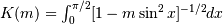

scipy.interpolate.LSQUnivariateSpline.antiderivative¶
- LSQUnivariateSpline.antiderivative(n=1)[source]¶
Construct a new spline representing the antiderivative of this spline.
New in version 0.13.0.
Parameters : n : int, optional
Order of antiderivative to evaluate. Default: 1
Returns : spline : UnivariateSpline
Spline of order k2=k+n representing the antiderivative of this spline.
See also
Examples
>>> from scipy.interpolate import UnivariateSpline >>> x = np.linspace(0, np.pi/2, 70) >>> y = 1 / np.sqrt(1 - 0.8*np.sin(x)**2) >>> spl = UnivariateSpline(x, y, s=0)
The derivative is the inverse operation of the antiderivative, although some floating point error accumulates:
>>> spl(1.7), spl.antiderivative().derivative()(1.7) (array(2.1565429877197317), array(2.1565429877201865))
Antiderivative can be used to evaluate definite integrals:
>>> ispl = spl.antiderivative() >>> ispl(np.pi/2) - ispl(0) 2.2572053588768486
This is indeed an approximation to the complete elliptic integral :
>>> from scipy.special import ellipk >>> ellipk(0.8) 2.2572053268208538